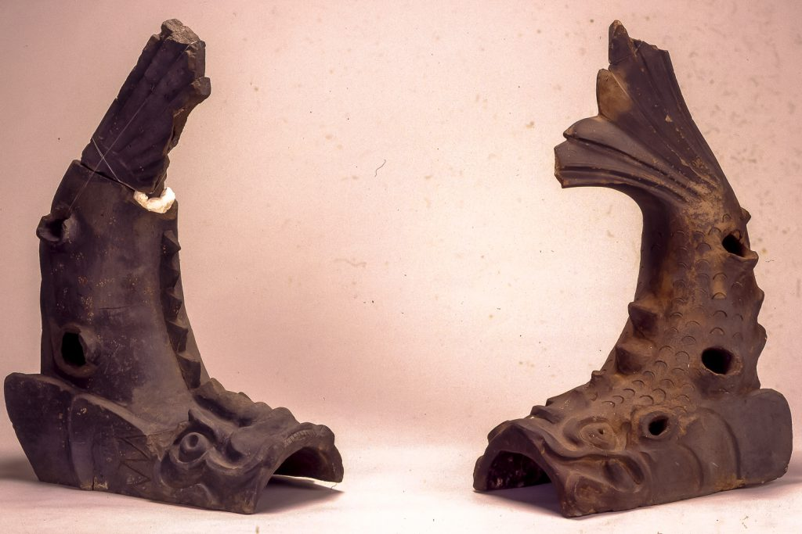
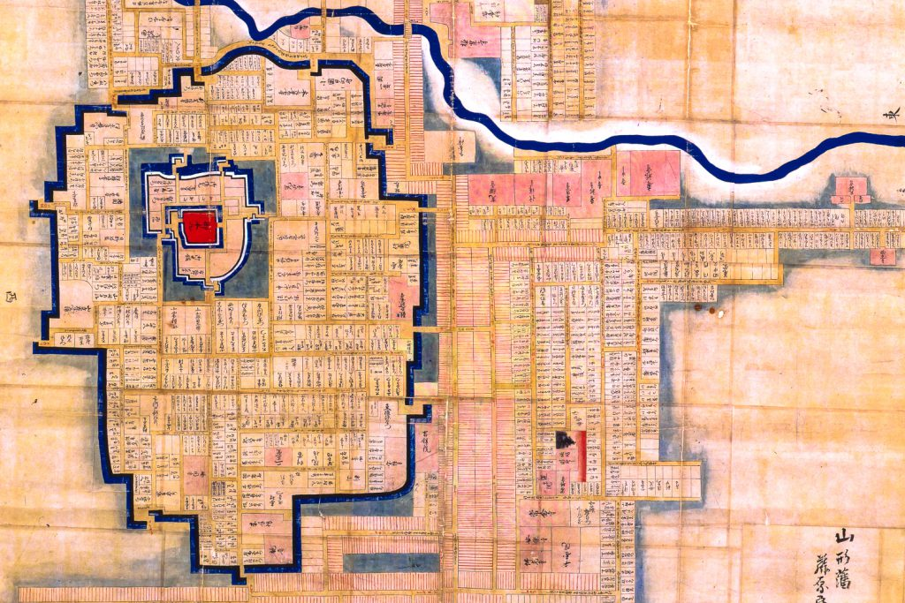
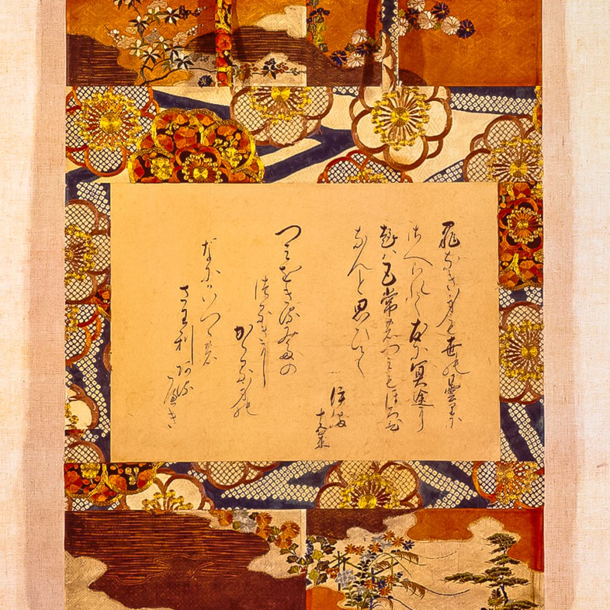

最上義光歴史館
もがみよしあき\Mogami Yoshiaki
最上義光介紹
「西元1889年，山形「市」誕生。
西元1989年12月1日，最上義光歷史館的成立便是為紀念山形市改制100年。
此處主要介紹山形的歷史、文物，與16至17世紀活躍於山形的英雄──最上義光。
14世紀以來最上家族便是山形地方的領主，而最上義光為最光家族的第11代家主。
其活躍時期為16世紀後半葉至17世紀初，正是從群雄並起的戰國時代逐漸轉移至江戶幕府的時期。
歷史館內容介紹
在山形城挖掘到的各式物品

此處展示的為在山形城挖掘到的各式物品。
斯波兼賴在西元1357年建造山形城，250年後，最上義光擴建山形城，並打造了城下町。
壯麗的山形城與最上義光的英雄形象十分相襯。
然而，西元 1873年頒布的廢城令讓全國各城都成了廢城，隨著山形城的第二護城河被填平，山形城也難逃廢城的命運。
如今考古挖掘持續進行中。這裡所展出的瓦片和生鏽的鐵釘、陶片等皆為山形城考古挖掘的成果。
而呈現魚形的鯱瓦則是原本安置於屋簷兩端，用來祈求不要發生火災的裝飾瓦。
16～17世紀的山形城城下町地圖

本地圖描寫400年前左右的山形城城下町，也就是現今山形市的原貌。
中心的紅色區域為領主居住的地方，四周三層藍色帶狀區域則是充滿水的護城河，用以保護領主、抵禦外敵。
護城河圍住的區域便是山形城，該區域的周長為6.5公里，面積為2,348萬平方公尺。
由地圖左上向右橫切的藍色線為河川，也同樣具有抵禦外敵之作用。
粉色區塊為宗教用設施。領主的家臣，也就是武士們則是住在沒有任何顏色但寫有文字的區塊。
網格中畫有紅線的區塊則是工匠或商人的居住地。
駒姬與最上義光的木像
此為最上義光與其次女駒姬的木雕，由山形市的雕刻家──長橋阿久（西元1928年～西元2000年）使用樟木雕刻而成，為本建築物建造當時完成的作品。
木雕的主題為駒姬被處刑前最後的身影；另一尊刻劃的則是在女兒踏上死亡之旅前，以舞餞別的最上義光。
約在18世紀時，牆上的松樹圖曾被掛在山形城內。
「駒姬」的悲劇
駒姬為最上義光的次女，據說是當時東日本的第一美人。
當時在中央勢力龐大的豐臣秀次聽聞此事，便命最上義光將駒姬許配給自己。
雖然最上義光多次拒絕，最後駒姬還是在15歲時成為豐臣秀次的側室。
才剛嫁給豐臣秀次不久，中央政權不穩，隨著秀次被命切腹自殺，駒姬也因身為豐臣秀次家的一員而慘遭斬首。
得知此事的最上義光悲痛欲絕。
在當地，駒姬被形容是因年輕貌美而死的公主殿下，正所謂「紅顏薄命」，駒姬便是真實寫照。
駒姬辭世詩懷紙（複製品）

駒姬（西元1581年～西元1595年）為最上義光的次女，據說是當時東國第一美人。
15歲時成為關白豐臣秀次的側室，但不久便隨秀次的失勢而在京都三條河原（現三條大橋旁）被斬首。
此辭世詩懷紙為後世祭祀駒姬的僧侶所筆，底下的布料則是色打掛和服的一部分。